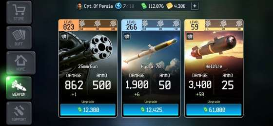
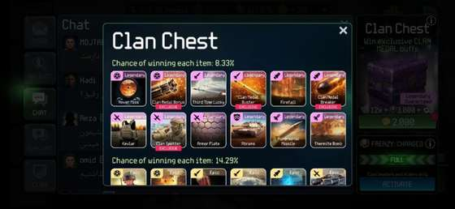
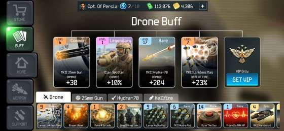
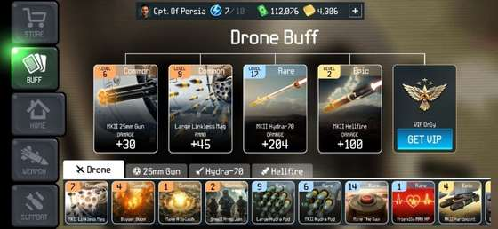

سلاح Carry
سلاح اصلی و دائمی توست و در بیشتر Progression بیشترین تعداد Kill را میگیرد. اگر نمیدانی Cash را کجا خرج کنی، 25mm معمولاً امنترین اولویت است.
سه سلاح اصلی نقشهای متفاوت دارند و کارتها میتوانند همان سلاح را برای هدف دیگری مناسب کنند. این صفحه کمک میکند Cash را بیهدف خرج نکنی و Loadout را با Stage و هدف Run هماهنگ کنی.
سلاح اصلی و دائمی توست و در بیشتر Progression بیشترین تعداد Kill را میگیرد. اگر نمیدانی Cash را کجا خرج کنی، 25mm معمولاً امنترین اولویت است.
برای گروههای Infantry و Light Vehicle مفید است و کمک میکند مهمات 25mm را روی دشمنهای پراکنده هدر ندهی.
برای Armor و اهدافی که تیر معمولی روی آنها کند است. Level پایینتر Hellfire نسبت به 25mm لزوماً به معنی ضعیفبودن Build نیست؛ هزینه هر Upgrade مهم است.

در عمل بهتر است 25mm را جلو نگه داری و Hydra/Hellfire را بر اساس نیاز Stage و Daily Mission بالا ببری. وقتی هزینه Upgrade 25mm و Hydra نزدیک شد، این یک نشانه خوب است که Cash بین دو شاخه به تعادل رسیده. Hellfire میتواند Level بسیار پایینتری داشته باشد چون هزینه هر ارتقایش سریعتر رشد میکند.
این دیتابیس بهمرور با تصویر و Effect کارتهای بیشتری کامل میشود. فعلاً کارتهایی که اثرشان برای ما روشنتر است در اولویتاند.
شانس ظاهرشدن دشمنهای طلایی را بیشتر میکند. برای Frenzy و Stage پرتراکم ارزش بالایی دارد.
Clan Medal دشمن طلایی را وقتی Kill با 25mm انجام میشود افزایش میدهد.
برای Kill دشمن طلایی با Hydra-70؛ مناسب Stageهای گروهی.
برای دشمن طلایی که با Hellfire کشته میشود؛ کاربردی در Armor-heavy Runها.
Superweapon سطح بالا که نمونه Mythic آن در Gold Supply Drop ثبت شده است. برای Wave سنگین ارزش دارد، نه مصرف بیدلیل در Run ساده.
کارتهای MKII برای 25mm، Hydra و Hellfire میتوانند Damage، Ammo یا کارایی همان سلاح را بالا ببرند.


